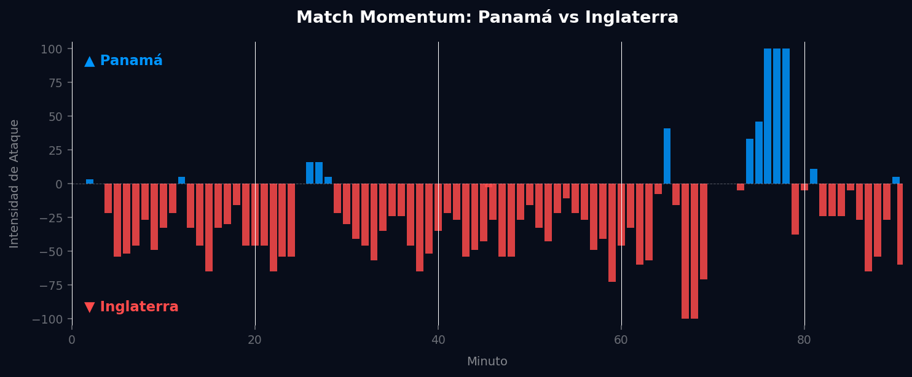

Grupo L
 Inglaterra
Inglaterra
Panamá vs Inglaterra
📅 2026-06-27 · 🕒 19:00 (Local)
Panamá

0 - 2
FINALIZADO
Inglaterra
📅 2026-06-27 · 🕒 19:00 (Local)
Inglaterra
El encuentro entre Panamá e Inglaterra fue, como se anticipaba, un ejercicio de control y paciencia por parte de los "Three Lions". Inglaterra dominó la posesión desde el pitido inicial, buscando espacios ante una bien organizada defensa panameña, que se replegó en un bloque bajo buscando anular las vías de ataque rivales. El primer gol de Inglaterra llegó en el minuto 28 por intermedio de Jude Bellingham, tras una combinación rápida por el centro que desestabilizó la zaga centroamericana. Este gol abrió el partido, forzando a Panamá a salir ligeramente de su esquema ultra-defensivo. Ya en la segunda mitad, Phil Foden amplió la ventaja en el minuto 57 con un remate ajustado desde fuera del área, sellando un marcador justo. Panamá, aunque intentó proyectarse en los últimos minutos, no logró generar ocasiones claras de gol, demostrando la solidez defensiva inglesa y la carencia ofensiva propia.
El análisis del Match Momentum revela una clara preponderancia de Inglaterra, que dominó la intensidad de ataque el 77.7% del partido, alcanzando su pico máximo (100.00) en el minuto 67', período que coincidió con su consolidación en el marcador y una fase de asfixiante presión tras el segundo gol. Panamá, por su parte, solo pudo dominar la intensidad el 13.8% del encuentro, con su momento de máxima intensidad (100.00) en el minuto 76'. Este lapso corresponde a un esfuerzo postrero y desesperado por anotar el gol del honor, aprovechando quizás una relajación momentánea de la defensa inglesa.
El Match Point (Punto Crítico) de inflexión táctica de este partido fue el primer gol de Inglaterra, anotado por Bellingham en el minuto 28. Antes de este tanto, Panamá mantenía una estructura defensiva compacta y organizada, logrando contener las embestidas inglesas con cierta eficacia. El gol no solo rompió la resistencia panameña, sino que también obligó al equipo centroamericano a abrir ligeramente sus líneas, exponiéndose más a los ataques rápidos de Inglaterra y permitiéndole a los europeos jugar con mayor libertad y control de los espacios.

Panamá adoptó una postura ultra-defensiva, configurando un bloque bajo en un 5-4-1 que buscaba negar espacios por el centro y forzar a Inglaterra a los costados. Sus virtudes radicaron en la disciplina táctica inicial y la entrega física para intentar cerrar los carriles. Sin embargo, su plan se desmoronó tras el primer gol, revelando una carencia de alternativas ofensivas. La transición defensa-ataque fue prácticamente inexistente, con un delantero centro aislado y sin apoyo. La incapacidad para retener el balón y generar jugadas combinativas evidenció la brecha de calidad y la falta de un plan B viable ante la adversidad.
Inglaterra exhibió un control total del juego, gestionando la posesión con paciencia y buscando abrir la densa defensa panameña a través de movimientos inteligentes y cambios de frente. La flexibilidad de sus mediocampistas y atacantes, como Bellingham y Foden, fue clave para desordenar la zaga rival. Tuvieron la virtud de la solidez defensiva, no concediendo prácticamente ninguna ocasión clara, y la capacidad para capitalizar sus oportunidades en momentos clave. La única "falla" podría ser una falta de mayor contundencia para reflejar su abrumadora superioridad en el marcador, lo que sugiere que optaron por conservar energía tras asegurar la ventaja.
El duelo táctico fue una clara victoria para el cuerpo técnico inglés. Gareth Southgate y su equipo prepararon un partido de control y desgaste, sabiendo que la paciencia sería clave para desarticular el muro panameño. La estrategia de Thomas Christiansen para Panamá fue la esperada: minimizar daños y apostar por un milagro defensivo, pero la brecha de talento individual y la superioridad táctica inglesa fueron determinantes. El marcador de 0 - 2 es un veredicto justo y lógico; refleja la dominación de Inglaterra y su eficiencia para capitalizar las ocasiones, sin ser una goleada que minimice el esfuerzo defensivo de Panamá, pero confirmando la clara diferencia de niveles entre ambas selecciones.